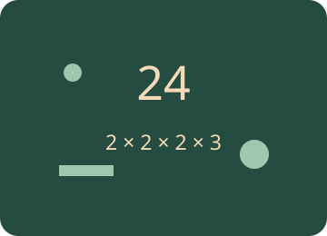

Numbers I
Build confidence with whole numbers. Investigate primes, factors, multiples, decimals, HCF, LCM, powers, roots and order of operations.

What will you learn?
- Recognise primes, factors, multiples and decimals.
- Find HCF and LCM using lists and prime factorisations.
- Connect square and cube numbers to powers and roots in N.
- Apply BIDMAS and explain each step.
Predict. Change. Explain.
Work on paper first, then use the controls and worked examples to check your reasoning.
These activities are practice; use the revision simulator for a test.
Class connections and further exploration
Use these models alongside your class notes. The diagrams illustrate mathematical relationships; they are not tools for measuring the physical size of your screen.
Choose “A little support” for method hints, or “Go further” for extensions. Your working notes and checks on this page are not sent to the teacher.
Ready to test your understanding?
Explore 60 questions for Numbers I. Select one or more areas and question levels. Practise with explanations or take a Test yourself quiz, then retry the questions you missed.